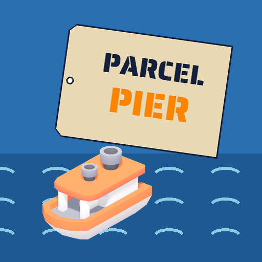

<- all projects

Parcel Pier
PC
Volume
Live
Sort parcels, load the boats and run the deliveries of five tiny islands.
Captain Pell has run Parcel Pier for the Lumen Isles for 30 years. On his last day he hands you the keys, a leaking rowboat and a parcel addressed to a lighthouse that is not on any map. Sorters split parcels by island, the crane loads boats at free docks, and fog and storms stretch every route. Find the slow part of the pier and fix it, and build a fleet from rowboats to cargo ships. Over 6 chapters of contracts from the islanders, strange parcels with no sender lead to a sixth island missing from every chart.